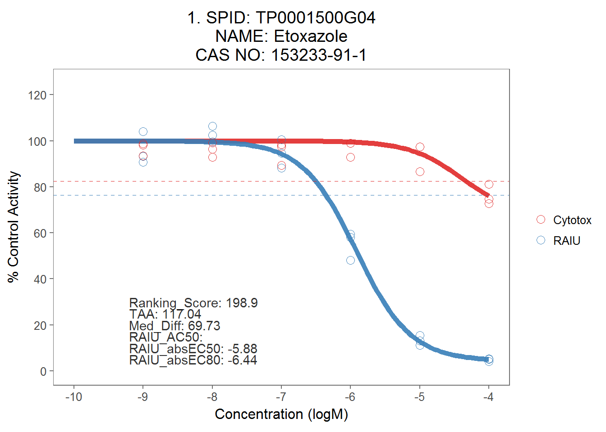

7 Export Dose-Response Curve
7.1 Make plots
#plot all
allplot <- toxplot::plot_tcpl(mc_model, sum_tbl_update, spid_chnm_table)
allplot[[1]]
7.2 Export as PDF file
# Export plots as pdf file
save_plot_pdf(allplot,"./output plots/ranked_dose_response_plots.pdf")7.3 Export PNG of multi-plots
Top ranked chemicals response curve put together in one plot. Exported in PNG format.
# Multiple plot function
#this is taken from http://www.cookbook-r.com/Graphs/Multiple_graphs_on_one_page_(ggplot2)
#
# ggplot objects can be passed in ..., or to plotlist (as a list of ggplot objects)
# - cols: Number of columns in layout
# - layout: A matrix specifying the layout. If present, 'cols' is ignored.
#
# If the layout is something like matrix(c(1,2,3,3), nrow=2, byrow=TRUE),
# then plot 1 will go in the upper left, 2 will go in the upper right, and
# 3 will go all the way across the bottom.
#
multiplot <- function(..., plotlist=NULL, file, cols=1, layout=NULL) {
library(grid)
# Make a list from the ... arguments and plotlist
plots <- c(list(...), plotlist)
numPlots = length(plots)
# If layout is NULL, then use 'cols' to determine layout
if (is.null(layout)) {
# Make the panel
# ncol: Number of columns of plots
# nrow: Number of rows needed, calculated from # of cols
layout <- matrix(seq(1, cols * ceiling(numPlots/cols)),
ncol = cols, nrow = ceiling(numPlots/cols))
}
if (numPlots==1) {
print(plots[[1]])
} else {
# Set up the page
grid.newpage()
pushViewport(viewport(layout = grid.layout(nrow(layout), ncol(layout))))
# Make each plot, in the correct location
for (i in 1:numPlots) {
# Get the i,j matrix positions of the regions that contain this subplot
matchidx <- as.data.frame(which(layout == i, arr.ind = TRUE))
print(plots[[i]], vp = viewport(layout.pos.row = matchidx$row,
layout.pos.col = matchidx$col))
}
}
}
##plot with minimal text notation (EC50 values etc.)
ap <- toxplot::plot_tcpl_minimal(mc_model, sum_tbl, spid_chnm_table)
png('./output plots/taa_demo.png', units="px", width=450*8.33, height=300*8.33, res=600)
ap[[2]]
dev.off()
# 15 graphs from >100 group
###
png('./output plots/top15v5.png', units="px", width=750*12.5, height=1000*12.5, res=900)
multiplot(ap[[1]],ap[[2]],ap[[3]],
ap[[4]],ap[[5]],ap[[6]],
ap[[7]],ap[[8]],ap[[9]],
ap[[10]],ap[[11]],ap[[12]],
ap[[13]],ap[[14]],ap[[15]],
layout = matrix(c(1,2,3,4,5,6,7,8,9,10,11,12,13,14,15), nrow=5, byrow=TRUE))
dev.off()
####
# six graphs from 50-100 group
png('./output plots/50-100.png', units="px", width=750*12.5, height=400*12.5, res=900)
multiplot(ap[[16]],ap[[19]], ap[[20]], ap[[25]], ap[[38]], ap[[51]], layout = matrix(c(1,2,3,4,5,6), nrow=2, byrow=TRUE))
dev.off()
# six graphs from <50 group
png('./output plots/below50.png', units="px", width=750*12.5, height=400*12.5, res=900)
multiplot(ap[[83]],ap[[87]], ap[[89]], ap[[92]], ap[[116]], ap[[118]], layout = matrix(c(1,2,3,4,5,6), nrow=2, byrow=TRUE))
dev.off()
# three graphs for no ranking scores
png('./output plots/no_score.png', units="px", width=750*12.5, height=200*12.5, res=900)
multiplot(ap[[151]],ap[[156]], ap[[169]], layout = matrix(c(1,2,3), nrow=1, byrow=TRUE))
dev.off()